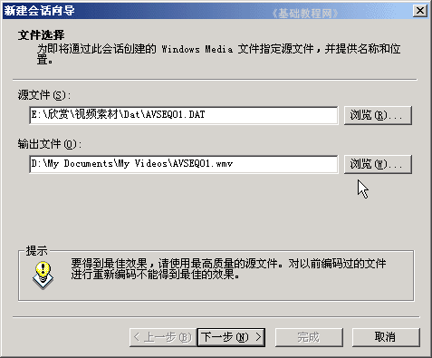

视频编辑 基础入门教程
五、视频转换 返回目录
在前面的课程中，我们学习了录制视频，这一课我们来学习视频格式的转换，
在Windows Media Encoder中有一项格式转换的操作；
1、启动视频软件
1）点“开始－所有程序－Windows Media－Windows Media 编码器”，启动编码器，出来一个“新建会话”面板；
2）在中间选择“转换文件”，然后点“确定”继续；
3）接下来出来一个选择文件的面板，在第一个框右边点“浏览”，找到要转换的文件，如果是VCD或RM格式，在文件类型里面选“所有文件”；

4）在接下来的文件分发中，选择第三个“流式处理”，然后点下一步；
5）接下来选择压缩比，打勾340，去掉下面的282，让质量好一些；
6）点“下一步”继续，在文件信息中输入相应的信息，拿不准的可以不填；
8）点“下一步”继续，出现一个总结面板，点“完成”后开始转换；
9）转换完成后会自动停止，转换过程中电脑运行将会变慢，因此一般不要做其他工作，
转换完成以后，可以到文件夹中找到相应的转换文件；
本节学习了转换视频格式的基本方法，如果你成功地完成了练习，请继续学习下一课内容；
本教程由86团学校TeliuTe制作|著作权所有
基础教程网：http://teliute.org/
美丽的校园……
转载和引用本站内容，请保留版权信息和本站链接。